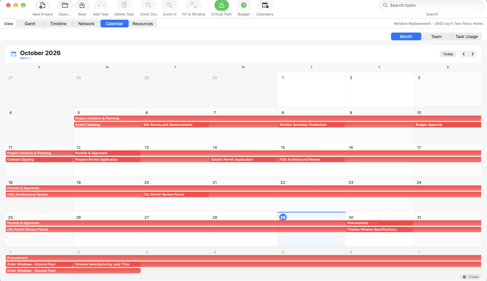
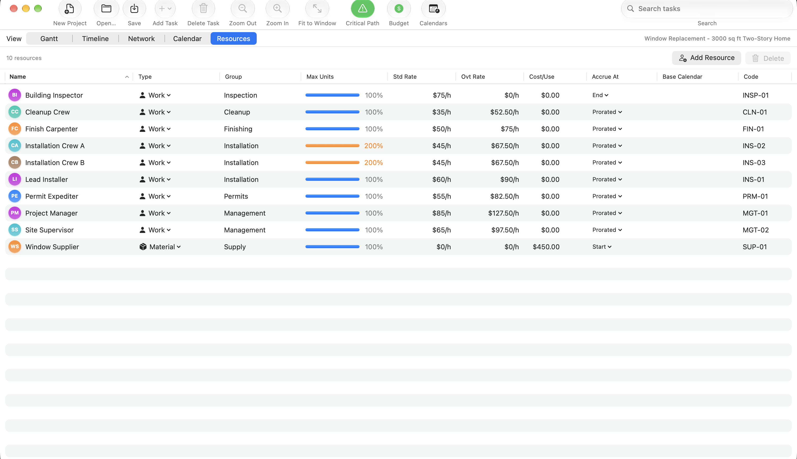
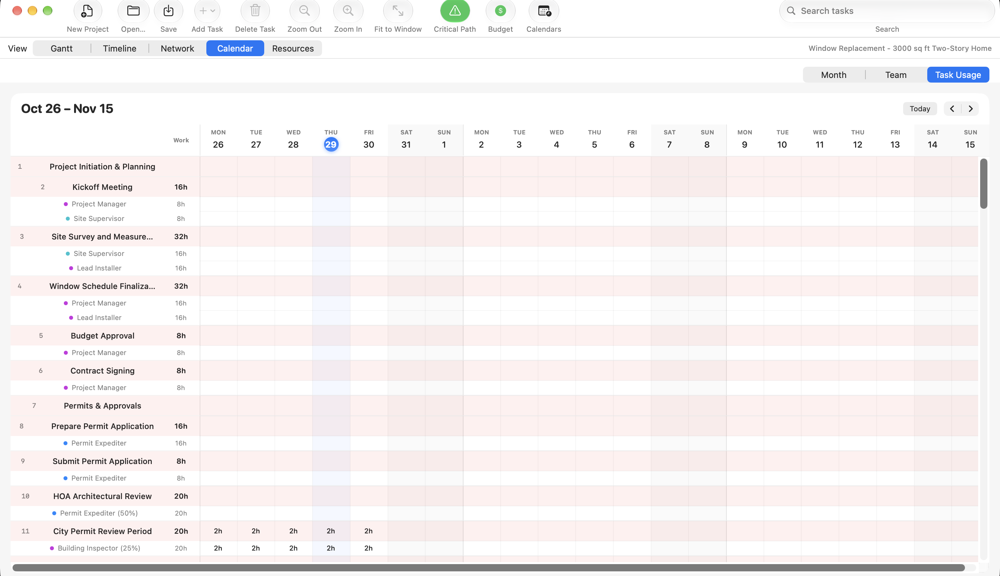

Your project file stays on your machine
Most free ways to open an .mpp file on a Mac ask you to upload it first. If your schedule
carries client names, staffing or budgets, that is often the end of the conversation.
MPP Viewer reads the file locally. It has no accounts, no telemetry and no network calls during normal use. You can confirm that yourself, because the source is public.
What it looks like





File formats it opens
Reading is handled by the MPXJ library, so the list goes well beyond Microsoft Project:
- Microsoft Project:
.mpp,.mpt - Microsoft Project XML, also called MSPDI:
.xml - Microsoft Project Exchange:
.mpx - Primavera P6:
.xer,.pmxml - GanttProject:
.gan - Asta Powerproject:
.pp,.ppx - SureTrak:
.stx, Phoenix Project Manager:.pod, and several others
What you can do with a file once it is open
- Five views: Gantt, Timeline, Network, Calendar with Month, Team and Task Usage modes, and Resources.
- Edit task names, durations, dates, percent complete, predecessors with type and lag, notes and resource assignments.
- A live critical path that recalculates as you edit, using a real backward pass for late dates and float.
- Project budget tracking, comparing planned cost against progress-weighted earned cost, per resource.
- Export the task list to CSV, export the whole project as a PDF, or print a timeline snapshot.
- Find and replace across task names and notes, and undo for essentially every edit.
Things you should know before downloading
Saving writes Project XML, not .mpp
Save and Save As always produce Project XML (MSPDI), whatever format you opened. Microsoft Project
reads that format, so the round trip works, but it will not write back into the original
.mpp file. The underlying library reads far more formats than it can safely write.
Scheduling does not use working-time calendars yet
You can define working weeks and holidays, and that data is saved correctly, but the scheduler currently assumes a fixed eight hour day and five day week. On a project that leans on Microsoft Project's calendar rules, dates and the critical path can drift by however many non-working days fall inside the span.
It is early software
The current release is version 0.1.2 and development is active. Bug reports are genuinely welcome.
macOS will warn you on first launch. The app and installer are signed with a Developer ID, but they are not notarized yet, so Gatekeeper flags them. After the first blocked attempt, open System Settings, then Privacy & Security, and choose "Open Anyway" next to the app's name. If you would rather not run an unnotarized download, or you need an Intel build, the build instructions cover compiling it yourself.
Common questions
Can I open an .mpp file without Microsoft Project?
Yes. MPP Viewer reads .mpp files directly and does not need Microsoft Project
installed, or any licence for it.
How do I open a Microsoft Project file on a Mac for free?
Download the installer above, run it, and open the file. The app is free and open source under the MIT licence, with no account and no subscription.
Can I convert an .mpp file to Excel or CSV?
Yes. MPP Viewer exports the full task list to CSV, which both Excel and Numbers open. It can also export the entire project as a PDF, or print a timeline snapshot.
Can I edit the file, or only view it?
You can edit task names, durations, dates, percent complete, dependencies, notes and resource
assignments, with undo for essentially every change. The one limit is on saving: it writes Project
XML (MSPDI) rather than back into the original .mpp file.
Does it work on an Intel Mac?
The prebuilt installer is Apple Silicon only. On an Intel Mac you can build it from source, which is covered in the build instructions.
Is my project file uploaded anywhere?
No. The file is read on your own machine. There are no accounts, no telemetry and no network calls during normal use, and the source code is public so you can check that for yourself.
Can it open Primavera P6 files?
Yes. It reads Primavera P6 .xer and .pmxml files, along with
GanttProject, Asta Powerproject, SureTrak and Phoenix Project Manager formats.
How it is built
The interface is native Swift and AppKit. File reading and writing happen in a separate .NET helper process that the app talks to over a local pipe, which is what makes the long format list possible. The installer bundles that helper, so there is no separate .NET install.
Issues and pull requests are welcome on GitHub.